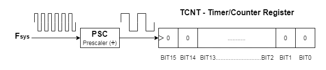

HAL API¶
Introduction¶
General Purpose Input/Output (GPIO)¶
GPIO peripheral represents the interface to interact with external world. This peripheral is used to configure the GPIO pins so that they have desired functionality. Internal block diagram of the GPIO peripheral is shown on the next image.
- For the desired pin,through the GPIO peripheral we can configure following:
Mode option
Output type
Enable/Disable Pull-Up or Pull-Down
Output speed
Alternative function of the pin
Control/Read state of the pin
GPIO mode of operation¶
- Pin can be configured to work in the following modes:
Digital Input
Digital Output
Alternative function
Analog
Output type of the GPIO¶
- Output type of the GPIO can be configured to:
Push-Pull configuration
Open-Drain configuration
With the Push-Pull configuration, we can set the state of the output pin to High or Low. With the Open-Drain confiugration, output pin can be either in state Low or Hi-Zi (High impedance - Can be interpreted as an open circuit). Open-Drain configuration enables us to drain higher current than the Push-Pull configuration.
Pull-Up and Pull-Down configuration¶
- GPIO peripheral integrates internal Pull-Up and Pull-Down resistor. We can have one of the following configuration regarding the pull resistors:
Pull-Up and Pull-Down resistor disabled
Pull-Up resistor enabled
Pull-Down resistor enabled

With the Pull-Up configuration, in the IDLE state line will be pulled to state High. With the Pull-Down configuration, in the IDLE state line wiill be pulled to state Low.
Output speed configuration¶
- We can configure output speed for the pin to the one of the following values:
Low speed
Medium speed
Full speed
High speed
Speed configuration is related to the speed of the transition of the output signal from the Low state to the High state and vice-versa.
Alternative function configuration¶
Every pin has addiotinal alternative functions that it can performe. This information can be found in the datasheed of the used MCU. Example of the datasheed for the STM32F407 can be found in the following image.
For example, to configure pin PA2 as an USART2-TX we will select alternative function 7. For the same pin, if we want to use it as an TIM2-CH3 we need to select alternative function 1.
Example¶
Following examples are based on the STM32 HAL API.
Configuring pin as output¶
HAL_RCC_GPIOD_CLK_ENABLE();
GPIO_InitTypeDef GPIO_InitStruct;
GPIO_InitStruct.Pin = GPIO_PIN_12|GPIO_PIN_13 | GPIO_PIN_14 | GPIO_PIN_15;
GPIO_InitStruct.Mode = GPIO_MODE_OUTPUT_PP;
GPIO_InitStruct.Pull = GPIO_NOPULL;
GPIO_InitStruct.Speed = GPIO_SPEED_HIGH;
HAL_GPIO_Init(GPIOD, &GPIO_InitStruct);
- To initialize GPIO peripheral, we need to do following:
Enable Clock for GPIO peripheral
Configure the GPIO through the instance of the GPIO_InitTypeDef struct
Initialize and configure the GPIO by calling the HAL_GIO_Init() function
- To initialize the GPIO pin(s) as output, we need to configure following variables of the struct mentioned above.
Pin - By writing data to this variable we select the pin(s) that we want to configure
Mode - This variable is used to configure the mode of the pin. Possible values are: (GPIO_MODE_OUTPUT_PP, GPIO_MODE_OUTPUT_OD,GPIO_MODE_INPUT,GPIO_MODE_AF_PP,GPIO_MODE_AF_OD. etc…).
Pull - We specify if we want to enable Pull-Up or Pull-Down resistors.
Speed - We specify the GPIO pin speed.
After we have desired configuration stored in the instance of the PGIO_InitTypeDef struct, we call the HAL_GPIO_Init(GPIOD, &GPIO_InitStruct). This function will initilize desired pins and configure them per the passed struct. First argument of this function is the GPIO port that we want to initialize, and the second argument is the configuration that we want to set to the desired GPIO port.
Because this examples are written for the STM32F407 Discovery board, we have selected pind PD12,PD13,PD14,PD15 because this pins have LEDs connected to them.
Configuring pin as input¶
To configure pin as input, we just need to change the Mode variable from the previous code to GPIO_MODE_INPUT.
HAL_RCC_GPIOA_CLK_ENABLE();
GPIO_InitTypeDef GPIO_InitStruct;
GPIO_InitStruct.Pin = GPIO_PIN_0;
GPIO_InitStruct.Mode = GPIO_MODE_INPUT;
GPIO_InitStruct.Pull = GPIO_NOPULL;
HAL_GPIO_Init(GPIOA, &GPIO_InitStruct);
U(S)ART¶
USART(Universal Synchronous Asynchronous Transmitter Receiver) is the peripheral wich implements the USART/UART protocol. USART is full-duplex communication protocol, which means that it can transfer data in both directions at the same time.
Physical characteristics¶
- USART protocol defines 3 lines:
Tx - Transmit line
Rx - Receive line
Sck - Synchronization line
- Unlike the USART, UART has only two lines:
Tx - Transmit line
Rx - Receive line
- USART/UART can have software or hardware flow-control. For this purpose we have two additional lines:
CTS - Clear to send
RTS - Requst to send
Connection diagram¶
USART/UART network is point-to-point network, which means that only two devicees can be connected to each other. Connection diagram is shown bellow.

As we can see, Tx line of first device is connected to the Rx line of the second device. Also, Tx line of second device is connected to Rx line of first device. Additionally, in the case of the USART, Sck line of the first device is connected to the Sck line of the second device.
Same as the Rx and Tx lines are croswise connected, CTS and RTS lines are also croswise connected as shown on the image bellow:
Timing diagram¶
UART doesn’t have synchronization mechanisam, so data on the transmission line is sampled in the middle of the bit interval. Timing diagram is shown on the image bellow:
- Because UART doesn’t have synchronization mechanisam, it is essential that the two devices that communicate using the UART protocl have set the same transfer speed. Also, both device must have stable clock source for this protocol to work. Transfer speeds are standardised and some of them are:
300
600
1200
2400
4800
9600
19200
38400
57600
115200
230400
460800
921600
Package Format¶
- USART/UART consists of:
Start bit - 1b
Data frame - 7b,8b or 9b depending on the aplication
Parity bit - 1b
Stop bit(s) - 1b or 2b
Start bit¶
The UART data transmission line is normally held at a high voltage level when it’s not transmitting data. To start the transfer of data, the transmitting UART pulls the transmission line from high to low for one clock cycle. When the receiving UART detects the high to low voltage transition, it begins reading the bits in the data frame at the frequency of the baud rate.
Data Frame¶
The data frame contains the actual data being transferred. It can be 7 or 8 bits long if a parity bit is used. If no parity bit is used, the data frame can be 9 bits long. In most cases, the data is sent with the least significant bit first.
Parity bit¶
Parity describes the evenness or oddness of a number. The parity bit is a way for the receiving UART to tell if any data has changed during transmission. Bits can be changed by electromagnetic radiation, mismatched baud rates, or long distance data transfers. After the receiving UART reads the data frame, it counts the number of bits with a value of 1 and checks if the total is an even or odd number. If the parity bit is a 0 (even parity), the 1 bits in the data frame should total to an even number. If the parity bit is a 1 (odd parity), the 1 bits in the data frame should total to an odd number. When the parity bit matches the data, the UART knows that the transmission was free of errors. But if the parity bit is a 0, and the total is odd; or the parity bit is a 1, and the total is even, the UART knows that bits in the data frame have changed.
Stop bit¶
To signal the end of the data packet, the sending UART drives the data transmission line from a low voltage to a high voltage for at least two bit durations.
Example¶
Initializing UART¶
- To initialize UART we need to follow bellow steps:
Enable clock for dedicated GPIO
Configure GPIO pin(s) as an Alternative function
Enable clock for UART
Using the UART Init Struct configure the UART
Enable the UART with desired configuration
Following code will initialize pin PA2 and PA3 as an alternative function pin. After we have set the mode of the pin to alternative function, we need to then configure desired alternative function. Each pin can have up to 15 alternative functions, and information about alternative funcions for each pin can be found in the datasheet.
In our case, we want this pin to perform UART funciontionality. From the bellow image we can see that for the pin PA2 we need to select alternative function 7 for this pin to perfome UART functionality.
GPIO_InitTypeDef GPIO_InitStruct;
__HAL_RCC_GPIOA_CLK_ENABLE();
GPIO_InitStruct.Pin = GPIO_PIN_2;
GPIO_InitStruct.Mode = GPIO_MODE_AF_PP;
GPIO_InitStruct.Pull = GPIO_NOPULL;
GPIO_InitStruct.Speed = GPIO_SPEED_FREQ_HIGH;
GPIO_InitStruct.Alternate = GPIO_AF7_USART2;
HAL_GPIO_Init(GPIOA, &GPIO_InitStruct);
GPIO_InitStruct.Pin = GPIO_PIN_3;
GPIO_InitStruct.Mode = GPIO_MODE_AF_PP;
GPIO_InitStruct.Pull = GPIO_NOPULL;
GPIO_InitStruct.Speed = GPIO_SPEED_FREQ_HIGH;
GPIO_InitStruct.Alternate = GPIO_AF7_USART2;
HAL_GPIO_Init(GPIOA, &GPIO_InitStruct);
- Next step is to configure UART peripheral. Following configuration is implemented in the bellow code
Desired baudrate passed as an argument to a function call
8-bit data frame
1 stop bit
No parity bits.
UART_InitTypeDef UART_InitStruct;
__HAL_RCC_USART2_CLK_ENABLE();
UART_InitStruct.BaudRate = baudrate;
UART_InitStruct.WordLength = UART_WORDLENGTH_8B;
UART_InitStruct.StopBits = UART_STOPBITS_1;
UART_InitStruct.Parity = UART_PARITY_NONE;
UART_InitStruct.Mode = UART_MODE_TX;
UART_InitStruct.HwFlowCtl = UART_HWCONTROL_NONE;
UART_InitStruct.OverSampling = UART_OVERSAMPLING_8;
After we have configure Init structure, we need to initialize the desired UART peripheral. We are going to initialize USART2 with the following code. Desired configuration and UART will be linked with the Handler variable which will be used to send/receive data through UART.
UART_HandleStruct.Instance = USART2;
UART_HandleStruct.Init = UART_InitStruct;
HAL_UART_Init(&UART_HandleStruct);
Send byte through UART (Blocking)¶
Following code represents the functions that will send 1 byte through UART interface.
void putcharUSART2(uint8_t data)
{
HAL_UART_Transmit(&UART_HandleStruct, & data,1,10000);
}
- To transmit data, we use the HAL_UART_Transmit(arg1,arg2,arg3,arg4) function, where:
arg1 - Address of the USART Handler variable
arg2 - Address of the data array that we want to send
arg3 - Number of bytes that we want to sedn through USART interface
arg4 - Timeout. If data is not sent in specified amount of time, transmision of data will be aborted.
Receive byte through UART (Blocking)¶
Following code represents the funcions which that will receive 1 byte through UART interface.
uint8_t getcharUSART2(void)
{
uint8_t data;
while(HAL_UART_Receive(&UART_HandleStruct, & data,1,10000));
return data;
}
- To receive data, we use the HAL_UART_Receive(arg1,arg2,arg3,arg4) function, where:
arg1 - Address of the USART Handler variable
arg2 - Address of the data array where we will store incoming data
arg3 - Number of bytes that we want to receive through UART interface
arg4 - Timeout. If data is not received in specified amount of time, transmision of data will be aborted.
Timers¶
A Timer Module in its most basic form is a digital logic circuit that counts up every clock cycle. More functionalities are implemented in hardware to support the timer module so it can count up or down. It can have a Prescaler to divide the input clock frequency by a selectable value. It can also have circuitry for input capture, PWM signal generation, and much more
The timers in a STM32 micro can be classified as follows:
Advanced Timers
General Purpose Timers
Basic Timers
Low power
Block diagram¶
Following image represents the block diagram of the Advance Timer Peripheral of the STM32F4xx MCU. Internal block structure for different types of Timers and on different MCUs may vary, but the logic behind the timers is always the same.
- By looking at the previous image, we can divide Timer internal structure to 4 parts:
Clock selection and configuration block
Prescaler and Counter block
Output capture block
Input capture block
Clock selection and configuration block¶
- This subblock is shown on the previous image. We can see that clock source for the timer can be:
Internal clock source
External trigger (from the external pin)
Internal trigger
Encoder interface
Selected clock source for the timer can also be forwarded to other peripherals like DAC,ADC and other timer through TRG0 line.
Prescale and Counter block¶
Following image represents the prescaler and counter block.
- This block consists of:
Prescaler - Used to reduce the frequency of the clock source
Counter - Measures number of positiv edges of the clock source
Depending on the timer type, Prescaler value can be arbitraty number or there is a small range of numbers that can be used to divide the clock source. Also, depeding on the timer type, Counter can be 8,16, or 32 bit wide. For STM32F4xx we have 16b and 32b timers.
Output capture block¶
- STM32F4xx timer can have up to 6 capture channels. This channels are used to compare the current value of the counter and values stored to the capture channels. When the value of the timer is equal or greater to the value stored inside the capture channel, different actions can be executed. Some of this actions are:
Flip the state of the dedicated pin
Run the IRQ Handler
Start the DMA transaction
This block is often used to generate different square wave signals. Most of the time, we will use this feature to generate the PWM signal.
Input capture block¶
Input capture block can be used to measure the signal width and frequency. When the transition of the singal on the dedicated pin is detected, current counter value will be stored to the dedicated compare channel. We can then use this information in combination with the frequency of the timers clock to calculate the widht of the signal of frequency.
Mode of operation¶
An STM32 timer module can operate in any of the following modes, however, you should not assume that a given timer does support all of these modes. Instead, you’ll have to check the datasheet to figure out which modes are supported by which timers. As we’ve seen earlier, there are many groups of timers which include: General-Purpose, Low-Power, Basic, Advanced-Control timers. Each of which does support a multiple of the following modes, however, some timers do support most of the operating modes.
In this section, we’ll get just a brief description of each mode of operation. How it works and what sort of applications it fits for. Each mode will be discussed in-depth with practical LAB experiments in future tutorials. But for today, we’ll get into Timer Mode in section4 and do its LAB in the next tutorial. Other modes will be coming later on in this series of tutorials.
Timer Mode¶
In timer mode, the timer module gets clocked from an internal clock source with a known frequency. Hence the clocking frequency is known, the overflow time can also be calculated and controlled by the preload register to get any arbitrarily chosen time interval. Each timer overflow, the timer signals the CPU with an interrupt that indicates the end of the specified time interval.
This mode of operation is usually used to get a specific operation done each specific time interval. And to achieve timing & sync between various tasks and events in the system. It can also replace delays in various situations for better system response.
STM32 Timers Explained Tutorial With Modes PWM Encoder
Counter Mode¶
In counter mode, the timer module gets clocked from an external source (timer input pin). So the timer counts up or down on each rising or falling edge of the external input. This mode is really helpful in numerous situations when you need to implement a digital counter without polling input pins or periodically reading a GPIO or continuously interrupt the CPU if you’ve chosen to hook it up to an EXTI pin.
You can actually monitor the counter value difference each time interval to tell how many pulses did occur or what was the frequency of it. Such a mode can be advantageous in many situations like this. And more examples are to come in upcoming tutorials.
PWM Mode¶
In PWM mode, the timer module is clocked from an internal clock source and produces a digital waveform on the output channel pin called the PWM signal. By using output compare registers (OCR), the incrementing timer’s register value is constantly compared against this OCR register. When a match occurs the output pin state is flipped until the end of the period and the whole process is repeated.
The timer in PWM mode will produce a PWM signal at the specified frequency the user chose. The duty cycle is also programmatically controlled by its register. The PWM resolution is affected by the desired FPWM and other factors as we’ll see in the dedicated tutorials for PWM generation.

Advanced PWM Mode¶
The advanced PWM signal generation refers to the hardware ability to control more parameters and add some hardware circuitry to support extra features for the PWM signal generation. Which includes:
The ability to produce a complementary PWM signal that is typically the same as the PWM on the main channel but logically inverted (high portion becomes low and vice versa). The ability to inject dead-time band in the PWM signal for motor driving applications to prevent shoot-through currents that result from PWM signals overlapping. The ability to perform auto-shutdown for the PWM signal, it’s also called “auto brake” which an important feature for safety-critical applications. And the ability to phase-adjust the PWM signal, and much more! All of this is referred to as advanced-PWM control.
Here is an example for PWM channels with complementary waveform output, with dead-band inserted, and phase-delay adjustment. A typical control signal in half-bridge mode.
Output Compare Mode¶
In output compare mode, a timer module controls an output waveform or indicates when a period of time has elapsed. When a match is detected between the output compare register (OCR) and the counter, the output compare function assigns the corresponding output pin to a programmable value defined by the output compare mode defined by the programmer.
The output compare pin can be driven high, low, toggles its sate, or stay unchanged. This is determined by the programmer as per the application requirements. This mode of operation can be extremely advantageous for generating timing signals and output driving in many applications as we’ll see in future tutorials.
Here is an example for a counting timer in output compare mode. Note when the output state is changed (toggled) and the value in the OCR (compare register TIM1_CCR1).
One-Pulse Mode¶
One-pulse mode (OPM) is a particular case of the previous modes. It allows the counter to be started in response to a stimulus and to generate a pulse with a programmable length after a programmable delay. Starting the counter can be controlled through the slave mode controller. Generating the waveform can be done in output compare mode or PWM mode.
A pulse can be correctly generated only if the compare value is different from the counter initial value. Before starting (when the timer is waiting for the trigger), the configuration must be CNT<CCRx ≤ ARR (in particular, 0<CCRx). For example, you may want to generate a positive pulse on OC1 with a length of tPULSE and after a delay of tDELAY as soon as a positive edge is detected on the TI2 input pin.
Input Capture Mode¶
In Input capture mode, the Capture/Compare Registers (TIMx_CCRx) are used to latch the value of the counter after a transition detected by the corresponding ICx signal. When a capture occurs, the corresponding CCXIF flag (TIMx_SR register) is set and an interrupt or a DMA request can be sent if they are enabled.
This mode is extremely important for external signal measurement or external event timing detection. The current value of the timer counts is captured when an external event occurs and an interrupt is fired. So, we can use this feature for a wide range of measurement applications.
An application example is an ultrasonic sensor that measures the distance and sends the information as a pulse to your microcontroller. By measuring the pulse width time, you can find out the distance reading. This can be achieved by using the input capture unit (ICU) within the timer module.
Encoder Mode¶
In the encoder interface mode, the timer module operates as a digital counter with two inputs. The counter is clocked by each valid transition on both input pins. The sequence of transitions of the two inputs is evaluated and generates count pulses as well as the direction signal. Depending on the sequence the counter counts up or down. So you don’t have to detect these pulses individually and see which came first to detect rotation direction and this kind of work. Now, all of this is done by hardware thanks to the encoder mode hardware support.
The timer, when configured in Encoder Interface mode provides information on the sensor’s current position. The user can obtain dynamic information (speed, acceleration, deceleration) by measuring the period between two encoder events using a second timer configured in capture mode. The output of the encoder which indicates the mechanical zero can be used for this purpose. Depending on the time between two events, the counter can also be read at regular times.
Timer Gate Mode¶
In timer gated mode, a timer module is also said to be working in “slave mode”. Where it only counts as long as an external input pin is held high or low. This input pin is said to be the timer gate that allows the timer to count or not at all.
This mode can be used in a wide range of applications and signal measurements. It can help you measure extremely short pulses with a very high resolution. And also trigger the timer to count on external events from sensors or other MCUs.
The counter starts counting on the internal clock as long as TI1 is low and stops as soon as TI1 becomes high. The TIF flag in the TIMx_SR register is set both when the counter starts or stops. The delay between the rising edge on TI1 and the actual stop of the counter is due to the resynchronization circuit on TI1 input. STM32 Timer Module Gated Mode Hardware - STM32 Timers Explained Tutorial
Timer DMA Burst Mode¶
The STM32 timers, not all of them, have the capability to generate multiple DMA requests upon a single event. The main purpose is to be able to re-program part of the timer multiple times without software overhead, but it can also be used to read several registers in a row, at regular intervals.
IRTIM Infrared Mode¶
An infrared interface (IRTIM) for remote control can be used with an infrared LED to perform remote control functions. It uses internal connections with TIM15 and TIM16 as shown in the diagram down below. To generate the infrared remote control signals, the IR interface must be enabled and TIM15 channel 1 (TIM15_OC1) and TIM16 channel 1 (TIM16_OC1) must be properly configured to generate correct waveforms. The infrared receiver can be implemented easily through a basic input capture mode.
All standard IR pulse modulation modes can be obtained by programming the two-timer output compare channels. TIM15 is used to generate the high-frequency carrier signal, while TIM16 generates the modulation envelope. The infrared function is output on the IR_OUT pin. The activation of this function is done through the GPIOx_AFRx register by enabling the related alternate function bit.